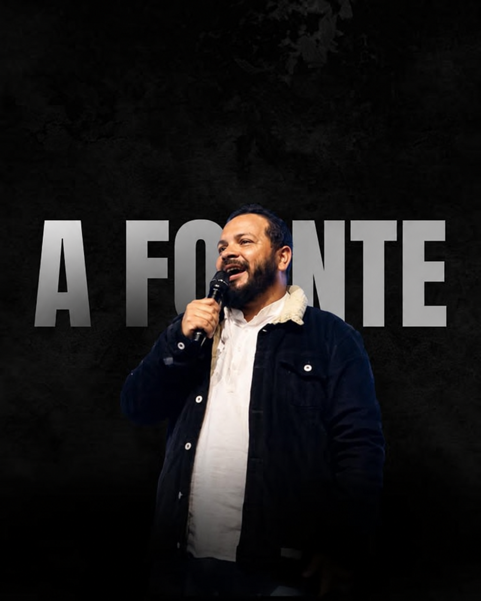
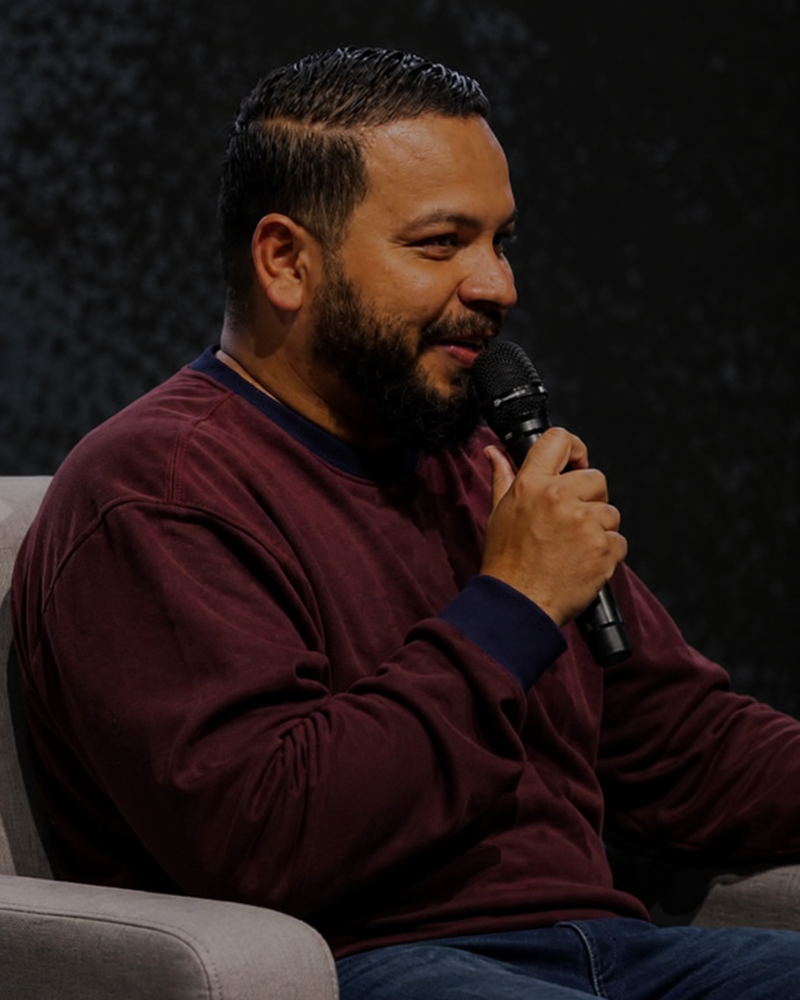
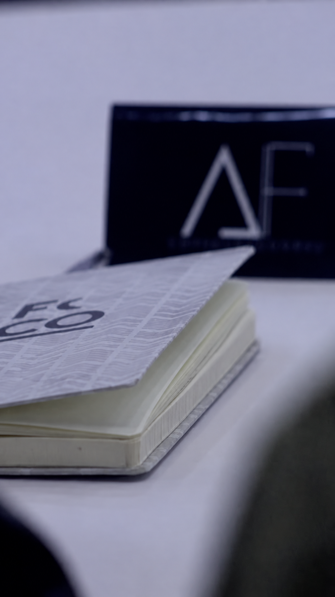

Para quem tem o chamado, mas ainda não conseguiu começar.
Coragem
Um movimento de fé e negócios
Um lugar para empreendedores encontrarem propósito, direção e uma comunidade que coloca Jesus no centro de cada decisão.

Empreender também é responder a um chamado. Estamos aqui para acolher quem ainda não começou, fortalecer quem quase desistiu e caminhar com quem deseja construir de um jeito diferente.
“Jesus é a fonte que sua empresa precisa.”
Não importa em qual ponto da caminhada você está. Há direção, recomeço e propósito para a sua história.

Mais do que estratégias, números ou crescimento: queremos formar empreendedores conscientes do chamado que carregam. Gente que prospera sem perder a essência, lidera com sabedoria e entende que toda boa construção começa no lugar secreto.

Imagens do perfil oficial @afontedoempreendedor_
A agenda da Fonte é atualizada pela nossa equipe e compartilhada com toda a comunidade.
Construímos pontes com quem acredita em empreendedores mais conscientes, negócios saudáveis e Jesus no centro de cada decisão.
Ser Parceiro ↗Ambientes que acolhem, conectam e fortalecem empreendedores em sua jornada.
Negócios que desejam gerar impacto sem abrir mão de valores e da essência.
Profissionais dispostos a compartilhar conhecimento, direção e experiência.
Este espaço foi preparado para receber experiências reais da nossa comunidade. Cada história pode ser a direção que outro empreendedor precisa.
Sua jornada pode começar aqui
Você não precisa construir sozinho. Faça parte de uma comunidade que acredita no seu chamado e caminha na mesma direção.